Cordatix
Small price. Whole worlds.
Cordatix makes PS1-style (PSX) asset packs for horror, liminal and backrooms-style games, and each world grows pack by pack. They work in Godot 4, Unity, Unreal and Blender, and you may use them in commercial projects. Each pack has a free sampler to try it first.
Here are the Godot 4 tutorials from the Cordatix devlogs: tested GDScript for PS1-style games, each with a GIF of it working, how to use it, what it needs and a free sampler to try it with. The code is MIT licensed: use it in any project, commercial ones too.
Godot 4 PSX tutorials
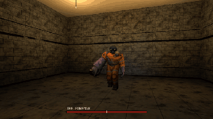
Make a Boss Fight with Phases
A boss's health, phases that begin at a share of it with a transition clip, and each phase's attacks drawn by weight, never the same three times running
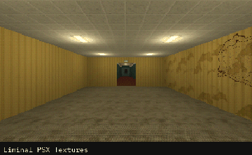
Use Several PSX Asset Packs in One Godot 4 Project
Several asset packs in one Godot project, and a script that sets the light limits, filters and navigation cells they ask for
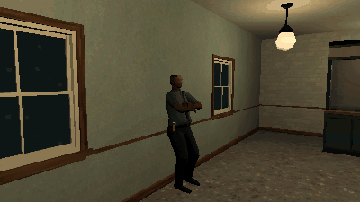
Make NPCs Turn Their Heads to the Player
A person's chest, neck and head turn to the player who comes near, over whatever clip plays
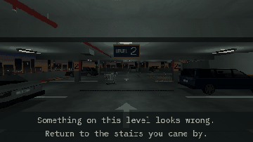
Script a Tutorial Run for an Anomaly Game
The first levels of a run set in advance, each with a hint for the player, then the draw takes over
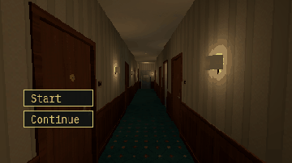
Start an Anomaly Loop Behind a Menu
The loop waits behind your title menu: nothing happens before Start, and the floor behind the menu is the one the run starts on
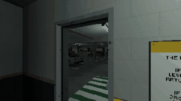
Draw Anomalies Without Repeats
Which anomaly a level shows: none twice before all have come, the obvious ones early, the subtle ones late
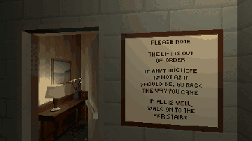
Make a Hallway That Loops for an Anomaly Game
One hallway between two stairwells built alike: walk on and you are in it again, a floor lower
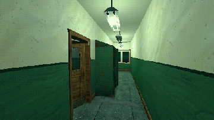
Hide in a Locker
Hide the player in a locker; a chasing creature loses them, and can search the lockers
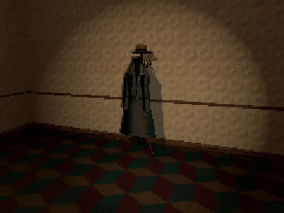
Make Something Move Only When the Player Looks Away
Something that changes only while nobody looks at it
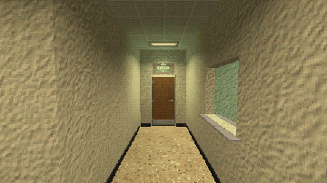
Make Doors Open Away from the Player
A door that swings away from the player, from either side
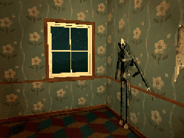
Make a Monster Step Out of a Wall
A monster that waits flat on a wall, steps out, and slips back unseen
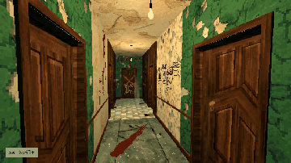
Rot a Room at Run Time
A room that decays while the player is away, and a decal where they look
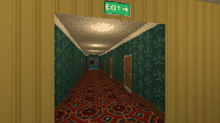
Build a PS1-Style Liminal Room
Crisp PS1 textures, a metre scale, office light and a low-resolution PSX look
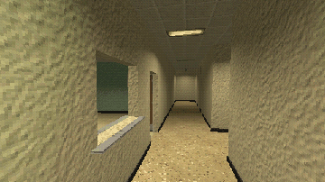
Build a Liminal Office Level with GridMap
Paint a level from 2 m pieces with GridMap, with lights and doors
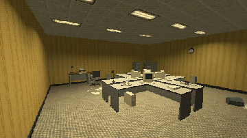
Furnish a Liminal Office
Place props, swap their states in place, and push them around
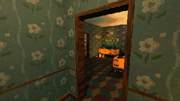
Switch a Room Between Festive and Creepy
One key turns a Halloween party into its abandoned aftermath
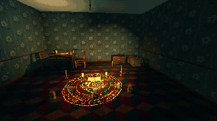
Make Pickups With Inventory Icons
Pick items up with a look and a key, and show them in an inventory bar
Try the packs free
Every world and pack has a free sampler with a few of its own files and a small demo: the free samplers, or all of them in the Cordatix Sampler Box.
The packs
PSX Horror, Anomaly Kits, Liminal PSX and Standalone Packs: every pack, grouped as the store shows them. Every paid pack, and every one to come, is in the Cordatix PSX Mega Pack.
How it is made: the packs and this code are generated procedurally with AI assistance, then checked with automated tests in Godot 4.3 and 4.7.2 and with in-engine renders.